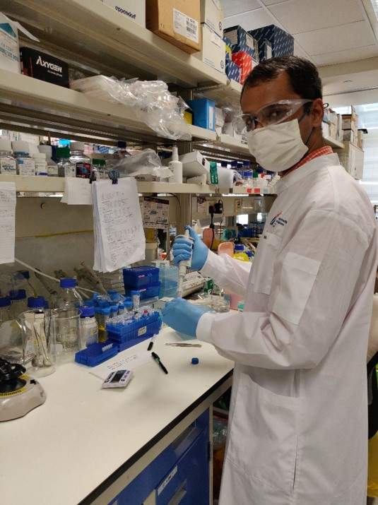
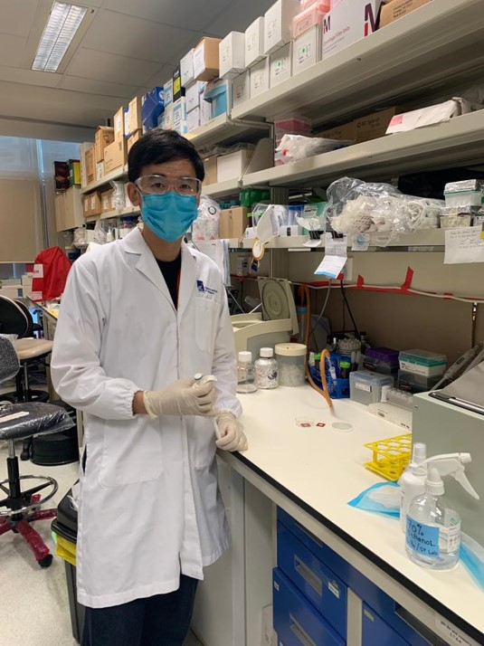
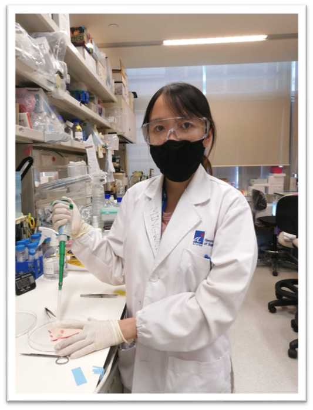
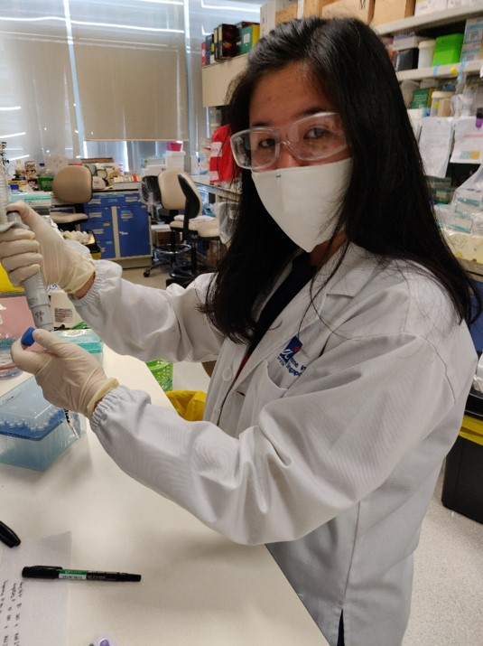
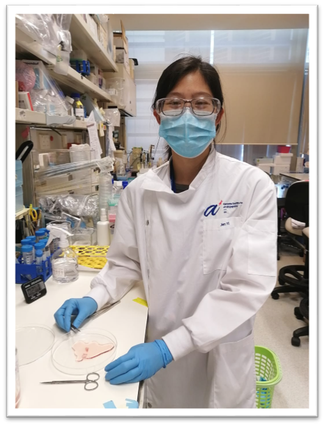
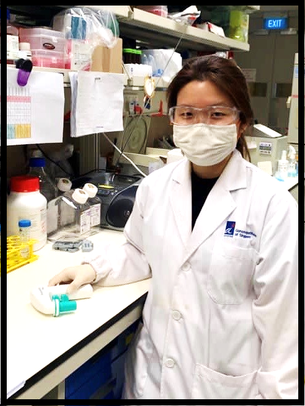

Current Members
Group Leader

Programme Manager
Post Doctoral Fellow
Post Doctoral Fellow
Post Doctoral Fellow
Post Doctoral Fellow
Research Officer
Research Officer
Research Officer
Research Officer
Team Reviews
Dr. Nirmala Arul Rayan
"I am fascinated by the gazillion omics technologies that we are exposed to by the day, and my interest lies in using relevant ones, to answer questions I have about brain function and disorder. When my lab-friendly fingers aren’t tickled with exciting, high-throughput high-quality data generation, you’ll find them dabbling with ‘R data analysis for dummies’. As part of the SCISSOR team, I help manage several projects and drive program engagement with different academic and industry partners. Outdoors, nature and child rights’ activism are my caffeine"

Dr. Jagadish Sankaran
"I like working at the interface of dry and wet lab in microscopy. I believe that a diverse team will aid in developing solutions to unmet clinical needs. I am excited to work at the interface of academia, clinic and industry. With my wet lab co-worker, I plan to investigate sub-cellular localization of RNA using PBMC and hope to contribute to developing spatial transcriptomic assays to investigate aberrant gene expression in CRC."

Dr. Li Bo
" I graduated with a PhD in virology from Harvard University and recently joined GIS as a postdoc. My scientific interest is in understanding the phenotype and interactions of immune cells in different diseases including cancer and infectious diseases. My current project focuses on studying the spatial interaction and gene expression patterns of different cell populations in the colorectal cancer tumor microenvironment. Despite being trained as a web-lab researcher, I am interested in learning about technology development and programming, and Shyam’s lab has offered an unique opportunity to achieve these goals. "

Dr. Michelle Kong
"I have always been interested in studying disease model that could contribute to the society. As we all know cancer is the most deadly and hard-to-treat disease, therefore it is important to understand the underlying signaling with extensive research. In WP1, my colleagues and I are studying the molecular aberrations of sarcomas by utilizing spatial omics analysis (DNA-MFISH) and high-throughput single-cell sequencing technology. We hope that our findings could contribute to a greater insight of cancer progression for a more rational therapeutic approach in the future. I am fully wet-laboratory trained during my PhD study, it is challenging to work on a research project that required loads of computational analysis. I am very excited and look forward to learn new skills - Bioinformatics!" "

Giovani Claresta Wijaya
"An internship at Singapore during my bachelor’s at Atma Jaya Catholic University, attracted me to Singapore. After my internship, I worked in NCCS on renal cell carcinoma. Intrigued by spatial transcriptomics, I moved to GIS and I am currently investigating sub-cellular localization of RNA using PBMC as a model system. "
Jiamin Toh
"I am just started on my research career and extremely excited to immerse myself in spatial omics and single cell sequencing, tying in with various sarcoma tissue types! It is amazing to be working in this programme where we can learn from the various disciplines working together – including computation analysis, wet lab assay developments, and tissue handling. I aim to continuously learn and explore with my peers and other postdocs. It is interesting to be part of creating a combined assay that will be able to detect chromosomal aberrations in sarcoma tissues."

Jen Yi Wong
"I started out working in liver disease models and toxicology but was keen to learn more about different fields of research. I enjoy working with colleagues from a wide range of disciplines. I am excited to explore into the analytical aspects and translational potential of spatial transcriptomic in sarcoma tissues."

Yurike Laurensia
"Single cell spatial transcriptomic is something that I have been wanting to learn as it’s an exciting and innovative technology. It’s interesting to see the gene expression from each cell in the tissue specimen of colorectal cancer patient. Prior to this, I worked at National Cancer Centre Singapore (NCCS) where I involved in a project to characterize the genetic profile of T-cell lymphoma."